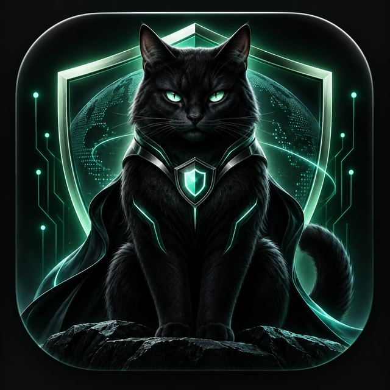

Установка на iPhone
Без App StoreКратко: откройте эту страницу в Safari, нажмите «Поделиться» → «На экран Домой» → «Добавить». Саму страницу можно использовать сразу, не устанавливая.

бегемотВЕБ-ПРИЛОЖЕНИЕ · IPHONEДобавить на экран: Safari → «Поделиться» → «На экран Домой».
Локальная проверка · без регистрации
ВЕБ · IPHONEЧто сегодня распутаем?
Откройте нужный раздел прямо в браузере. Установка на экран «Домой» необязательна.
Сообщение, ссылка или сомнительное предложение.
Покажу признаки риска и следующий шаг. Ссылки не открываю. Отсутствие найденных признаков не гарантирует безопасность.
Разбор выполняется по встроенным правилам. Ссылки не открываются, а репутация доменов онлайн не проверяется. Если признаков риска не найдено, это не подтверждает безопасность.
Проверим ответы сайта Secretworld и передачу тестового файла. Это не измерение скорости тарифа: браузер не показывает уровень сигнала, состояние SIM и настройки оператора.
Локальные подсказки о сообщениях и iPhone.
Бегемот — помощник, который тоже может ошибаться.
Без ключа работают встроенные правила, а не языковая модель. Для свободных вопросов подключите свой ключ OpenRouter.
Наматывай на ус.
Маленькие открытия.
Большая польза.
Пользуйтесь в Safari без установки или добавьте ярлык на экран.
Кратко: откройте эту страницу в Safari, нажмите «Поделиться» → «На экран Домой» → «Добавить». Саму страницу можно использовать сразу, не устанавливая.
Safari сохранит файлы приложения и справочники. Проверка сообщений и архив работают на устройстве. Онлайн-ИИ и проверка соединения требуют интернета.
Подготавливаю офлайн-доступ…
Звук воспроизводится только на странице после нажатия. Это стилизация, не запись живого кота; он не запускается через push в фоне.
Safari не передаёт странице SMS, список звонков, уровень сигнала, установленные приложения или их разрешения. Бегемот не блокирует звонки и рекламу в других приложениях и не посылает push-уведомления.
История выключена по умолчанию. Включите её в «Памяти», если хотите хранить разговоры на этом устройстве.